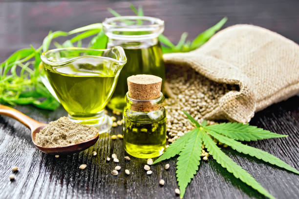

How to Enhance Your Workout with Cannabis: Fitness Podcast Reveals the Secrets
Posted by on 2024-05-31
Are you looking to take your workouts to the next level? Have you considered incorporating cannabis into your fitness routine? A recent fitness podcast has revealed some secrets on how to enhance your workout with the help of this versatile plant.
Cannabis has long been associated with relaxation and stress relief, but it also has potential benefits for physical performance. Many athletes and fitness enthusiasts have reported improved focus, endurance, and recovery when using cannabis before or after their workouts.
So, how can you incorporate cannabis into your fitness regimen? The key is finding the right balance and dosage that works best for you. Some people may benefit from consuming a small amount of THC before a workout to help them get in the zone and stay motivated. Others may find that CBD products are more effective for reducing inflammation and promoting muscle recovery post-exercise.
It's important to note that everyone reacts differently to cannabis, so it's essential to start slow and pay attention to how your body responds. If you're new to using cannabis for fitness purposes, consider consulting with a healthcare professional or knowledgeable budtender for guidance.
In addition to experimenting with different strains and products, there are other ways you can enhance your workout with cannabis. Incorporating mindfulness practices such as yoga or meditation can help you connect more deeply with your body and mind while under the influence of cannabis. You may also want to explore incorporating CBD-infused topical creams or balms into your recovery routine for targeted relief of sore muscles.
Ultimately, the key to successfully enhancing your workout with cannabis is listening to your body and finding what works best for you. By being mindful of dosages, consumption methods, and product selections, you can unlock the full potential of this natural plant ally in optimizing your fitness journey.
So why not give it a try? Experiment with different ways of incorporating cannabis into your workouts and see how it impacts your performance. Who knows - you may just uncover a powerful secret weapon that takes your fitness game to new heights!